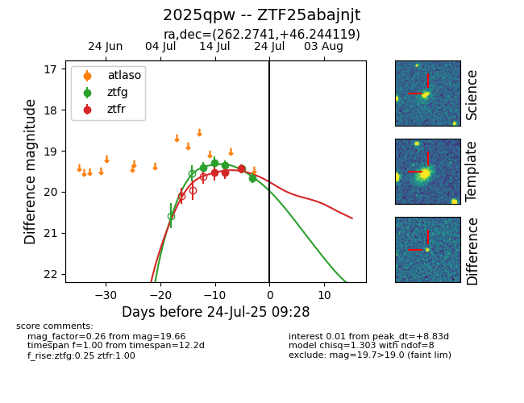

Target ZTF25abajnjt at 2025-07-24 09:28, see:
FINK: fink-portal.org/ZTF25abajnjt
Lasair: lasair-ztf.lsst.ac.uk/objects/ZTF25abajnjt
ALeRCE: alerce.online/object/ZTF25abajnjt
TNS: wis-tns.org/object/2025qpw
YSE: ziggy.ucolick.org/yse/transient_detail/2025qpw
alt names
ZTF25abajnjt (ztf,fink)
2025qpw (tns,yse)
coordinates:
equatorial (ra, dec) = (262.2741,+46.24412)
galactic (l, b) = (72.3398,+33.07706)
photometry
last ztfg=19.66, ztfr=19.44
5 ztfg, 3 ztfr detections
